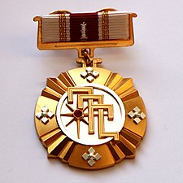
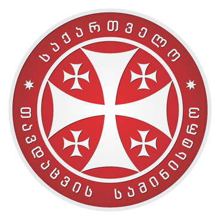
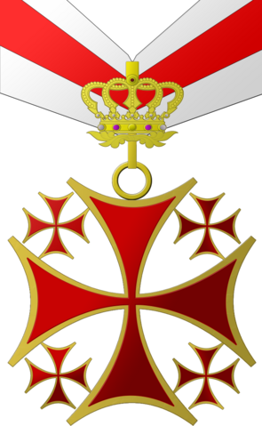
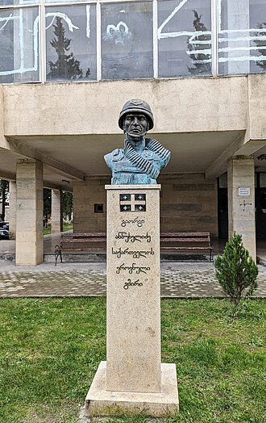

გიორგი ანწუხელიძე (დ. 18 აგვისტო, 1984, სოფ. ქვემო ალვანი, ახმეტის მუნიციპალიტეტი — გ. 9 აგვისტო, 2008, ცხინვალის რეგიონი) — საქართველოს შეიარაღებული ძალების სამხედრო მოსამსახურე, IV ქვეითი ბრიგადის, 41-ე ბატალიონის უმცროსი სერჟანტი. 2008 წლის რუსეთ-საქართველოს ომის დროს, ტყვედ ჩავარდნილი, წამების შემდეგ მოკლეს ოსმა სეპარატისტებმა. გარდაცვალების შემდეგ მიენიჭა საქართველოს ეროვნული გმირის წოდება.
გიორგი ანწუხელიძე დაიბადა 1984 წლის 18 აგვისტოს ახმეტის მუნიციპალიტეტის სოფ. ქვემო ალვანში. 1999 წელს დაამთავრა სოფ. ქვემო ალვანის საშუალო სკოლა. 2003-2004 წლებში გაიარა სამხედრო სავალდებულო სამსახური შინაგანი ჯარების პირველ ოპერატიულ ბრიგადაში. 2004 წელს მონაწილეობდა ცხინვალის რეგიონში მიმდინარე შეიარაღებულ კონფლიქტში. 2005 წლის 23 აპრილიდან, 2006 წლის პირველ აგვისტომდე მსახურობდა II ქვეითი ბრიგადის, 21-ე ბატალიონში. 2005 წლის 10 სექტემბრიდან 2006 წლის 26 აპრილამდე იმყოფებოდა სამშვიდობო მისიის შესასრულებლად ერაყის რესპუბლიკაში. ერაყიდან დაბრუნებულს, ჯანრმთელობის გაუარესების გამო, სამხედრო სამსახურისთვის თავის დანებება მოუხდა. 2008 წლის 17 აპრილიდან შეიარაღებულ ძალებს დაუბრუნდა და IV ქვეითი ბრიგადის, 41-ე ბატალიონის შემადგენლობაში ჩაირიცხა.
გიორგი ანწუხელიძე 2008 წლის 9 აგვისტოს, რუსეთ-საქართველოს ომის დროს, ერთ-ერთი შეტაკების შემდეგ, ტყვედ ჩაუვარდა მოწინააღმდეგეს, წამებისა და დაკითხვის შემდეგ კი, ცხინვალის მე-5 სკოლასთან, ძმათა სასაფლაოზე ცემით მოკლეს. 2008 წლის ნოემბრამდე უგზო-უკვლოდ დაკარგულად ითვლებოდა, მაგრამ მას შემდეგ, რაც ცხინვალიდან ათი ქართველის ცხედარი გადმოასვენეს, გენეტიკური ექსპერტიზით დადგინდა, რომ ერთ-ერთი მათგანი გიორგი ანწუხელიძე იყო. დაკრძალულია თბილისში, მუხათგვერდის ძმათა სასაფლაოზე. 2009 წლის იანვარში ინტერნეტით გავრცელდა ვიდეოები, სადაც მისი წამების კადრები იყო ასახული. ვიკიციტატა „...ვიდეოში ჩანს, რომ ისინი რიგრიგობით ძლიერად ახტებიან ზურგზე გიორგი ანწუხელიძეს და აიძულებენ მიწას აკოცოს. აგინებენ და შეურაცხმყოფელ სიტყვებს ეუბნებიან. პირიდან სისხლი მოსდის, თუმცა წინააღმდეგობას მაინც უწევს და ბოლომდე არ იხრება მიწისკენ. როგორც მათი საუბრიდან ირკვევა, ძირითადად ოსი და ასევე რუსი სამხედროები არიან. ადამიანი, რომელიც უშუალოდ აწარმოებს გიორგი ანწუხელიძის დაკითხვას, ოსური აქცენტით ქართულ ენაზე ლაპარაკობს, პერიოდულად ისმის მისი ოსურად ლაპარაკიც. იქვე არიან სხვა სამხედროფორმიანი პირებიც, სავარაუდოდ, მათ შორის, არიან ოსი არაოფიციალური შეიარაღებული ფორმირებების წარმომადგენლებიც. სამხედროფორმიანი პირების სახეები არ ჩანს. მხოლოდ ერთი ადამიანის სახე ჩანს, და ის მეორე ვიდეოშიც არის. ერთ-ერთ მომენტში ისმის რუსი სამხედროს სიტყვები, სუფთა რუსულით საუბრობს, რაც გვაფიქრებინებს, რომ ის ეროვნებით რუსია. ასევე, მეორე ვიდეოშიც ჩანს, რომ მას სასტიკად სცემენ. გიორგის გარს ბევრი ხალხი ახვევია, ისინი მხოლოდ ოსურად ლაპარაკობენ, გიორგი მიმწყვდეული ჰყავთ ღობესთან და ფეხებით ძლიერად ურტყამენ...“ („ახალგაზრდა იურისტთა ასოციაციის“ წარმომადგენელი თამთა მიქელაძე) 2022 წელს, რუსეთ-უკრაინის ომის დროს, 331-ე გვარდიის საჰაერო-სადესანტო პოლკის მეთაური პოლკოვნიკი სერგეი სუხარევი, რომელიც გიორგი ანწუხელიძის წამებაში მონაწილეობდა, უკრაინულმა ძალებმა მოკლეს
2009 წელს დაჯილდოვდა ვახტანგ გორგასლის I ხარისხის ორდენით.  2011 წელს საქართველოს თავდაცვის სამინისტროს უწყებრივი მედლით „სამშობლოსათვის თავდადებული“.  2013 წლის 15 აპრილს საქართველოს პრეზიდენტის მიხეილ სააკაშვილის გადაწყვეტილებით მიენიჭა ეროვნული გმირის წოდება.  2013 წლის 2 ნოემბერს „თუშების სადროშომ“ გიორგი ანწუხელიძეს თუში სახალხო გმირის წოდება მიანიჭა.
2013 წელს სოფელ ქვემო ალვანში გაიხსნა გიორგი ანწუხელიძის მემორიალი. 2013 წელს გიორგი ანწუხელიძის სახელი მიენიჭა საქართველოს თავდაცვის სამინისტროს სერჟანტთა მომზადების ცენტრს (2018 წლიდან — გიორგი ანწუხელიძის სახელობის სერჟანტთა აკადემია). 2018 წელს გიორგი ანწუხელიძის სახელი მიენიჭა თუშეთში კავკასიონის მთავარი წყალგამყოფი ქედის სამხრეთ განშტოებაზე მდებარე ერთ-ერთ უსახელო მწვერვალს.[2] 2023 წლის 8 აგვისტოს საქართველოს პარლამენტის ეროვნული ბიბლიოთეკის II კორპუსში მდებარე დამოუკიდებლობის დარბაზში გაიხსნა გიორგი ანწუხელიძის კედელი, რომელზეც გამოსახულია მავთულხლართებით დაფარული საქართველოს სიმბოლური რუკა.[3] 2023 წლის 28 ოქტომბერს მშობლიურ სოფელ ქვემო ალვანში გიორგი ანწუხელიძის ბიუსტი გაიხსნა. ბიუსტის ავტორები არიან მოქანდაკეები: თემური ქებურია და ბადრი თავბერიძე. ბიუსტის გაკეთების ორგანიზატორი იყო ადგილობრივი ორგანიზაცია „თუშეთის განვითარების ფონდი“, რომელმაც ბიუსტის გაკეთებისთვის მოსახლეობისგან მოახდინა თანხების მობილიზება (მათ შორის ემიგრანტებისგან).
